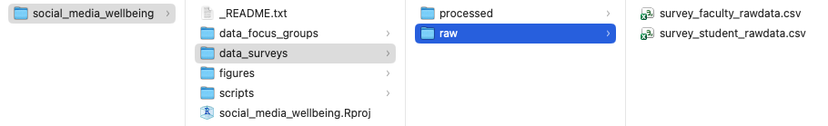

# A) load packages
library(tidyverse)
# B) read in faculty survey data
survey <- read_csv(“data/raw/survey_faculty-data.csv”)Lesson 4: Troubleshooting Activity
Activity - Solving a Data Cleaning Problem
Your supervisor has asked you to look over a former research assistant’s script and data. The files are associated with another branch of the project, which is looking at university faculty’s perception of social media use and well being.
You were given three files:
The survey that was shared with university faculty.
The Data file generated by the faculty survey, called
survey.csv.The script used by the research assistant, called
script.R: When you open the file, you realize the script is not only uncommented, which means that you don’t know what has already been done to the data, but that it is also riddled with errors.
NoteBreakout Room
In breakout rooms, go through ‘script.R,’ and troubleshoot any errors that come up, adding comments to explain what each step does. Remember to rename the data file and script according to project naming conventions.
Answer Key
Do not read the drop-down content until you have tried to troubleshoot on your own.
TipAnswer
1. Set-Up
Don’t forget to load in packages at the start of your script!
2. Rename Columns
Did you catch the missing comma after “What is your academic rank?”
# give columns names that are easier to work with!
survey_rename <- survey |>
rename(timestamp = “Timestamp”,
name = “Name”,
email = “Email”,
age = “Age”,
province = “Province”,
gender = “Gender”,
academic_rank = “What is your academic rank?”,
department = “What is your primary department?”,
personal_use = “On average, how many hours per day do you personally spend on social media?”,
platforms = “Which social media platforms do you use?”,
student_use = “On average, how many hours per day do you believe students spend on social media?”,
student_performance = “To what extent do you believe social media affects student academic performance?”,
student_connected = “Please indicate how much you agree or disagree with the following statements about social media and student mental health: [Social media helps students feel connected to others.]”,
student_stressed = “Please indicate how much you agree or disagree with the following statements about social media and student mental health: [Social media makes students feel anxious or stressed.]”,
student_distract = “Please indicate how much you agree or disagree with the following statements about social media and student mental health: [Social media distracts students from academic work.]”,
student_lonely = “Please indicate how much you agree or disagree with the following statements about social media and student mental health: [Social media improves my mood when I feel lonely.]”,
student_disengagement = “Have you observed social media use impacting student engagement in your classes?”)3. Remove Duplicate Entries
Make sure the opening and closing brackets match!
4. Anonymize Data
When using select() to remove multiple columns, column names must be wrapped within the concatenate function, c().
5. Reorder Columns
Did you catch the typo when reading in survey_anon?
6. Separate Out Values
That pesky extra quotation mark makes R think everything that follows should be in quotes!
7. Deal with NAs
Did you catch the typo in ‘province’?
8. Replace Values
Check: do all cases of case_when() have a double equal sign, ==?
# A) check responses for 'province' and 'department'
survey_na |> distinct(province) |> arrange(province) |> print(n = Inf)
survey_na |> distinct(department) |> arrange(department) |> print(n = Inf)
# B) rectify alternate spellings/representations
survey_replace <- survey_na |>
mutate(province = case_when(province == “AB” ~ “Alberta”,
province == “B.C.” ~ “British Columbia”,
province == “BC” ~ “British Columbia”,
province == “MB” ~ “Manitoba”,
province == “NB” ~ “New Brunswick”,
province == “NS” ~ “Nova Scotia”,
province == “ON” ~ “Ontario”,
province == “QC” ~ “Quebec”,
province == “Québec” ~ “Quebec”,
province == “SK” ~ “Saskatchewan”,
TRUE ~ province), # this last bit is important - it means: if not on this list, leave as-is
department = case_when(department == “Bio” ~ “Biology”,
department == “biology” ~ “Biology”,
department == “business” ~ “Business”,
department == “CS” ~ “Computer Science”,
department == “Comp Sci” ~ “Computer Science”,
department == “computer science” ~ “Computer Science”,
department == “Educ.” ~ “Education”,
department == “education” ~ “Education”,
department == “english” ~ “English”,
department == “Hist.” ~ “History”,
department == “history” ~ “History”,
department == “nursing” ~ “Nursing”,
department == “physics” ~ “Physics”,
department == “Psych” ~ “Psychology”,
department == “psychology” ~ “Psychology”,
department == “Soc” ~ “Sociology”,
department == “sociology” ~ “Sociology”,
TRUE ~ department)) # if not on this list, leave as-is
# C) check responses for 'province' and 'department' again
survey_replace |> distinct(province) |> arrange(province) |> print(n = Inf)
survey_replace |> distinct(department) |> arrange(department) |> print(n = Inf)9. Recode by Criteria
Did you notice the missing ‘or’ symbol, | beside ‘Psychology’? What about the missing bracket at the end of relocate()?
# group departments into their respective faculties, in new column 'faculty'
survey_recode <- survey_replace |>
mutate(faculty = case_when(department == “Biology” |
department == “Computer Science” |
department == “Physics” ~ “Science”,
department == “Commerce” |
department == “Business” ~ “Business”,
department == “Education” ~ “Education”,
department == “English” |
department == “History” ~ “Humanities”,
department == “Nursing” ~ “Health”,
department == “Psychology” |
department == “Sociology” ~ “Social Sciences”)) |>
# put new 'faculty' column beside 'department'
relocate(faculty,
.after = department)10. Pivot Longer
Another case of a missing comma - this time, after listing out the columns to pivot longer.
Data Management Considerations
Do not read the drop-down content until you have finished the activity.
TipData Management
In addition to the considerations of having to work with somebody else’s messy materials, you may have noticed that the directory structure we have set up for the project does not accommodate for the faculty survey or focus groups that were outlined in the project description. What a mess!
This is not at all uncommon in research projects, and we wanted to give you a taste of what a messy scenario might look like in real life. With that said, we have outlined a possible directory structure for the whole project, with the caveat that this could be set up in numerous ways depending on how you want to interact with the project files. The goal of this activity was to reinforce the idea that planning in advance can save you time and headaches, but to also give you a sense of what cleaning up a messy project might entail.
